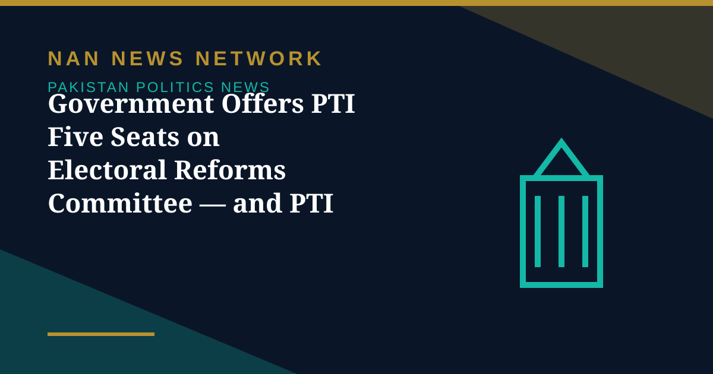

Government Offers PTI Five Seats on Electoral Reforms Committee — and PTI Asks for the 2013 Formula

The government has invited Pakistan Tehreek-e-Insaf (PTI) to join a parliamentary committee on electoral reforms, with Federal Minister for Parliamentary Affairs Tariq Fazal Chaudhry telephoning PTI chief whip Amir Dogar, reports on November 3 said.
The proposed split
Under the proposed formula, 15 members of the government and five members of the opposition from the National Assembly would sit on the committee. Chaudhry asked Dogar to send PTI's names to the Speaker of the National Assembly as soon as possible so the notification forming the committee can be issued, Pakistan Desk reported.
Why PTI has not accepted yet
Dogar questioned what role the opposition could play with what he called extremely low representation, and asked for the formula used by the electoral reforms committee constituted in 2013, which operated by consensus across parties and produced the Elections Act 2017. He also demanded the committee first focus on investigating alleged electoral rigging. What has not been published is whether the committee has terms of reference, a timeline, or any remit over the Election Commission itself — so the test will be whether the government moves on the ratio or treats the offer as already made.
Sources: The Pakistan Daily, Pakistan Desk, ARY News, November 3, 2026
More on Pakistan Politics News
- ECP Issues Show-Cause Notice to MQM-P Over Missed Intra-Party Poll Deadline
- MQM-P Launches Street Movement for New Administrative Units, Announces November 29 Rally
- Pakistan Welcomes US Mediation Offer on Taliban Talks — With Conditions
- PTI Hits Back at Shehbaz Sharif Over KP Criticism, Demands End to Governor's Rule
- China's CPC Minister Liu Haixing Arrives in Islamabad on First Official Visit
- PPP Courts Opposition to Join 30-Member Electoral Reforms Committee
- National Assembly Unanimously Passes Workplace Harassment Resolution as Parliament Is Prorogued
- National Assembly Passes Four Government Amendment Bills by Majority Vote
- Opposition Signals Willingness to Join Electoral Reforms Committee After PPP Outreach
- National Assembly Session Suspended After Speaker Finds House Lacks Quorum
- Pakistan Proposes Parliamentary Friendship Group With Turkmenistan
- Lahore High Court Judge Mohsin Akhtar Kayani Resigns, Citing Executive Grip on Judiciary
- Pakistan Says Afghan Firing Kills One in South Waziristan Border District
- Pakistan Marks Kashmir Black Day With Rallies Across the Country
- National Assembly Passes Seven Private Members' Bills, Sends Six to Committees
- Pakistan Strongly Condemns Houthi Missile Attacks Near Makkah and Madinah
- Pakistan, Saudi Arabia and Turkiye Reported to Hold Tehran Talks on De-escalation
- Pakistan LPG Shortage Worsens as Iran Border Crossings Close
- Pakistan Ends Machine-Readable Passports and Switches Fully to E-Passports
- Pakistan Calls for a Fairer Global Order at the United Nations